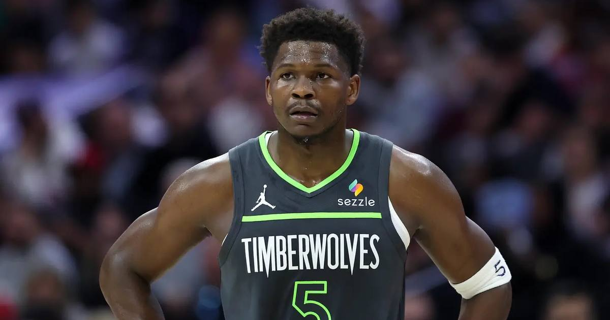

Anthony Edwards Drops 45 in the Opener, Joining Wilt and MJ in NBA History
Anthony Edwards hung 45 points and 10 rebounds on the Heat in Minnesota's 131-106 season-opening win — becoming just the third player in NBA history with multiple 40-point season openers, alongside Wilt Chamberlain and Michael Jordan.

Disclosure: this post contains affiliate links. I earn a commission on qualifying purchases.
Anthony Edwards didn't just spoil Giannis Antetokounmpo's Miami debut — he carved his name into one of the rarest scoring clubs in NBA history. In Minnesota's 131-106 season-opening rout of the Heat at Kaseya Center on Wednesday night, Edwards poured in 45 points and 10 rebounds on 16-of-29 shooting, including a franchise opening-night record nine 3-pointers.
The history
Edwards is now the third player in NBA history with multiple 40-point season openers. The complete list:
• Wilt Chamberlain — 4 (consecutively, 1959 through 1962)
• Michael Jordan — 3 (1986, 1989, 1995)
• Anthony Edwards — 2 (41 at Portland in the 2025 opener, 45 tonight)
The rest of the verified ledger from the night:
• Most points ever by a Timberwolf in a season opener.
• Franchise opening-night record: 9 threes (9-of-17).
• First player in NBA history with 45+ points, 10 rebounds and 5+ threes in a season opener.
• His 125th career 30-point game.
• He scored 36 before the fourth quarter arrived and checked out with 3:51 left, Minnesota up 28. Fifty was sitting right there.
Spoiling Giannis' debut
The night was supposed to belong to Antetokounmpo, making his Heat debut after the June blockbuster trade from Milwaukee. He heard MVP chants early and dropped 21 in the first half, finishing with 35 points on 13-of-19 shooting and 6 rebounds — but he also fouled out, airballed a free throw, and was hit with a flagrant foul for elbowing Terrence Shannon Jr.
The LaMelo debut
Ball's first game as a Timberwolf: 21 points, 5 threes, 6 assists — including four assists early in the first quarter to help Minnesota start fast. He called Edwards "the ultimate competitor" on Inside the NBA afterward. The duo combined for 66 points and 14 of Minnesota's 21 threes. Jaden McDaniels added 17 points and Rudy Gobert grabbed 15 rebounds.
The run that broke it
Minnesota used a 23-7 burst spanning the second and third quarters to turn a 1-point lead into 78-61, then a 45-23 run to bury Miami for good. The Wolves outscored the Heat 63-24 from three-point range and won the rebounding battle 52-34.
Minnesota has now won 6 of its last 8 season openers. Miami has dropped three straight openers — the third time in franchise history.
Sources: Reuters · Sportsnet · ClutchPoints · USA Today · whynba.com
Watch
Source: Ant-Man vs. The Greek Freak — Edwards & Antetokounmpo combine for 80 PTS (NBA on ESPN)
ESPN's highlight package from opening night in Miami — all 45 of Ant's points, the nine threes, and Giannis' 35 in his Heat debut.
Gear up: Sports category post → [Fanatics](https://fanatics.93n6tx.net/WOLjqe): via Fanatics